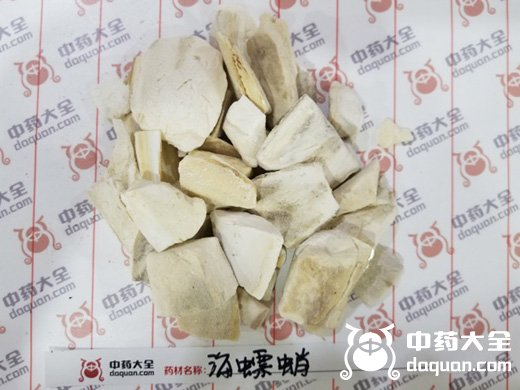
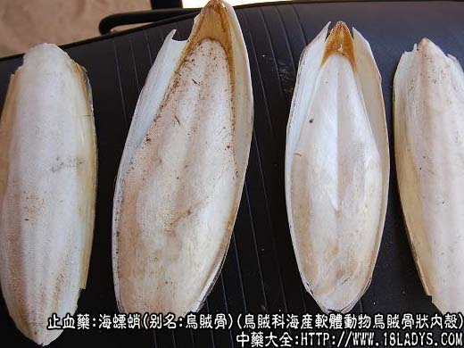
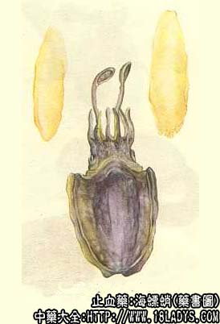

本品为较常用中药。始载《神农本草经》列为中品，原名乌贼鱼骨。李时珍称乌贼鱼骨又名海螵蛸。
别名：乌贼骨、墨斗鱼骨。
来源：为乌贼科海产软体动物乌贼及针乌贼，无针乌贼等多种乌贼的骨状内壳。分布于黄海、渤海、南海及东海。
产地：主产于广东、福建、浙江、山东等地，其它沿海地带亦有产。
性状鉴别：本品呈扁平长椭圆形，中间厚，边缘薄，长约10~20厘米，宽约4~8厘米。背部骨质坚硬、白色或淡黄白色，有密布的小疙瘩状突起，形居近平行的半环状纹理。两侧边缘一层硬脆皮膜。腹面洁白，有层纹或水波纹状。体轻质松脆，易折断。断面有明显微向背面弯曲平行细纹。腹面磨擦时有大量白色细粉脱落。气微腥，味微咸而涩。以块大，色白，完整者为佳。
主要成分：含碳酸钙、磷酸钙、甲壳质、胶质等。
功效与作用：收敛、制酸、止血。
炮制：剁成小块。
性味：咸、涩、微温。
归经：入肝、肾经。
功能：收敛止血，止带，制酸。
主治：吐血、便血、崩漏，带下，胃痛吐酸及外伤出血等症。
临床应用：1、用于制酸止痛。治胃和十二指肠溃疡。效果比较确实，取其所含的碳酸钙等有中和胃酸的作用，对减轻吞酸、烧心症和缓解疼痛有一定帮助，配合饮食治疗，能促进溃疡愈合。可单用乌贼骨粉，但因乌贼含大量碳酸钙，多服易致便秘，故常配浙母贝，既能防止便秘，又能加强解痉止痛作用，因浙贝母有类阿托品样作用，又能缓泻，方如乌贝散（海贝散）。实验证明此方有制酸作用。
2、用于止血，主要是治疗泌尿生殖系统器官的出血，常用于治崩漏，尤其适宜于兼有湿热白带的病例。常配茜草根同用，方如固冲汤（见茜草根项下）。可用于肺、胃出血，配白芨、贝母等。
3、用于止泻，治久虚泻痢而脐周腹痛者，有一定效果。又用于眼科，前人以本品与冰片共研末点眼治目翳；现代用海螵蛸棒（削成铅笔头状，煮沸消毒后备用）浸蘸治沙眼药物，摩擦眼结膜，治沙眼滤泡性结膜炎，有柔和而彻底的刮治作用，并缩短疗程。
附：前人的经验认为血枯经闭可用乌贼骨，似乎本品也有通经活血作用，但实际上，乌贼骨的作用仍以收敛止血为主，所谓通经有效，可能是有补益气血药配伍的作用。古方即用“四乌贼骨一芦茹（即茜草根）必丸”治血枯闭经，现代应用此方时，多用其加味，治由贫血引起的经闭。
用量：3~12g。
处方举例：1、乌贝散：乌贼骨90g，浙母贝30g，共研细末，每服3~6g，饭前温开水送服，每日3次。
2、四乌贼骨一芦茹丸加味：乌贼骨12g，茜草根3g，黄芪9g，党参9g，当归9g，熟地黄9g，川芎9g，白芍12g，水煎服。